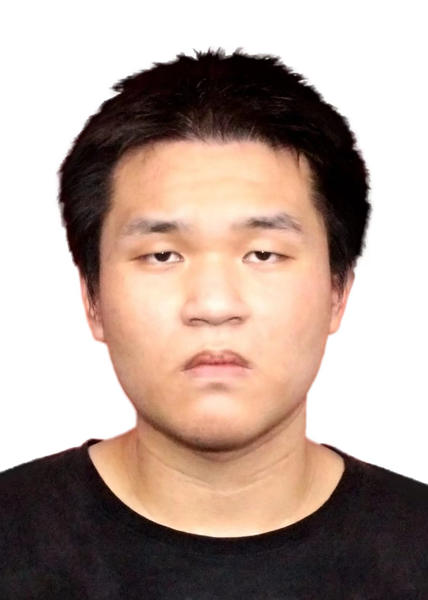

Zhichao Chen/ Ziciu Can(Wade-Giles romanization)
|
 |
PhD Candidate,
College of Control Science and Engineering, Zhejiang University
No. 38 Zheda Rd.(Yuquan Campus), Hangzhou, Zhejiang Province, People's Republic of China
Phone: +86-18027539728
Email: 12032042@zju.edu.cn, chenzhch7@alumni.sysu.edu.cn
Supervisor: Professor Zhihuan Song
|
Undergraduate Education - Sun Yat-Sen University (2016 to 2020)
Background: Undergraduate degree of Chemical Engineering and Technology, Sun Yat-Sen University. GPA 4.1-5.0, ranking 2-108, (Transcript in Chinese/English).
Honors: I won national scholarships twice during my undergraduate period.
As first author, I had 1 paper accepted under the supervision of A.P. Chang He and A.P. Haoshui Yu
Language: I received CET-6 at 533.
Graduate Education - Zhejiang University (PhD Candidate, 2020 to 2025)
During my first year study, I obtained a GPA of 4.27-5.0.
As first author, I had 6 journal papers accepted, 3 journal papers in submission, and 3 conference paper accepted.
As co-author, I had 2 conference paper accepted, 2 conference papers in submission.
Co-Authors: Mr. Hao Wang, Dr. Le Yao, Dr. Zhiqiang Ge, Dr. Zhihuan Song
Thesis (In Chinese)
" Functional-Optimized Probabilistic Latent Variable Models for Soft Sensing".
First-Authored Papers (Accepted)
" Blending Data and Knowledge for Process Industrial Modeling Under Riemannian Preconditioned Bayesian Framework", IEEE Transactions on Knowledge and Data Engineering (IF 10.4, Q1, CCF-A, Accepted), 2025.
" Improving Data-Driven Inferential Sensor Modeling by Industrial Knowledge: A Bayesian Perspective", IEEE Transactions on Systems Man and Cybernetics: Systems (IF 8.6, Q1, CCF-B, Accepted), 2024.
" Rethinking the Diffusion Models for Missing Data Imputation: A Gradient Flow Perspective.", The Thirty-Eighth Annual Conference on Neural Information Processing Systems (Main Track, Poster, CCF-A, NeurIPS 2024), 2024.
" E2AG: Entropy-Regularized Ensemble Adaptive Graph for Industrial Soft Sensor Modeling", IEEE/CAA Journal of Automatica Sinica (IF 15.3, Top 1, Q1, Accepted), 2024.
" Analyzing and Improving Supervised Nonlinear Dynamical Probabilistic Latent Variable Model for Inferential Sensors", IEEE Transactions on Industrial Informatics (IF 11.7, Q1, CCF-C, Accepted), 2024.
" Variational Inference Over Graph: Knowledge Representation for Deep Process Data Analytics", IEEE Transactions on Knowledge and Data Engineering (IF 10.4, Q1, CCF-A, Accepted), 2023.
" Unsupervised Anomaly Detection & Diagnosis: A Stein Variational Gradient Descent Approach", CIKM’23 (CCF-B, Accepted), 2023.
" Monotonic Neural Ordinary Differential Equation: Time-series Forecasting for Cumulative Data", CIKM’23 (CCF-B, Accepted), 2023.
" Directed Acyclic Graphs With Tears", IEEE Transactions on Artificial Intelligence (IEEE Transactions), 2022.
" Knowledge Automation Through Graph Mining, Convolution, and Explanation Framework: A Soft Sensor Practice", IEEE Transactions on Industrial Informatics (IF 11.7, Q1, CCF-C, Accepted), 2022.
" Stochastic optimization-based approach for simultaneous process design and HEN synthesis of tightly-coupled RO-ORC-HI systems under seasonal uncertainty", Chemical Engineering Science (IF 4.1, Q2, Accepted), 2021.
" Optimization of waste heat-driven wastewater desalination process in chemical process", Journal of Chemical Engineering of Chinese Universities (In Chinese), 2021.
Corresponding-Authored Papers
" Optimal Transport for Time Series Imputation", The Thirteenth International Conference on Learning Representations (CAAI-A), 2025.
" AAKGNN: When Adaptive Graph Neural Network Meets Kolmogorov-Arnold Network for Industrial Soft Sensors", IEEE Transactions on Instrumentation and Measurement (IF 5.9, Q1, Accepted), 2025.
" SPOT-I: Similarity Preserved Optimal Transport for Industrial IoT Data Imputation", IEEE Transactions on Industrial Informatics (IF 11.7, Q1, CCF-C, Accepted), 2024.
" LSPT-D: Local Similarity Preserved Transport for Direct Industrial Data Imputation", IEEE Transactions on Automation Science and Engineering (IF 5.9, Q1, CCF-B, Accepted), 2024.
First-Authored Papers (In submission, Resentful Works)
So far, I think I have done a fairly good job in theory (as far as I can), but I often encounter unreasonable and arrogant rejection comments.
" Relaxing Probabilistic Latent Variable Models’ Specification via Infinite-Horizon Optimal Control", (In Submission).
First-Authored Papers (In submission, Attempt Works)
" GBrNPLVR: Nonlinear Probabilistic Latent Variable Regression with Gaussian Prior as “Bridge” For Industrial Inferential Sensor Modeling", In Submission.
" OptNPLVM: Optimizing Nonlinear Probabilistic Latent Variable Model For Inferential Sensors", In Submission.
Co-Authored Papers
" TMoE-P: Toward the Pareto Optimum for Multivariate Soft Sensors", IEEE Transactions on Automation Science and Engineering (IF 5.9, Q1, CCF-B, Accepted), 2024.
" Entire Space Counterfactual Learning for Reliable Content Recommendations", IEEE Transactions on Information Forensics and Security (IF 6.3, Q1, CCF-A, Accepted), 2024.
" FreDF: Learning to Forecast in Frequency Domain", 2024
" Optimal Transport for Treatment Effect Estimation", NeurIPS 2023 (CCF-A, Accepted), 2023
" ESCM2:Entire Space Counterfactual Multi-task Model for Post-click Conversion Rate Estimation", SIGIR 2022 (CCF-A, Accepted), 2022.
" Modeling and Optimization of Simultaneous Waste Heat Utilization and Wastewater Treatment Processes", Computer Aided Chemical Engineering, 2019.
Primary Skills
Programming: Python machine learning (JAX/ PyTorch), probabilistic programming language (Pyro), and General Algebraic Modeling System (GAMS).
Optimization: Convex optimization, Optimal Control, Stochastic Optimization.
Modelling: Variational Inference, Gradient Flow, Optimal Control, Bayesian Filtering & Smoothing, Mathematical Programming, Linear Dynamical System, Chemical Engineering Transport Process (Mass, Heat, Momentum).
Plan and Control: integer programming-based scheduling, control system simulation,
Application: Time series forecasting, Anomaly Detection & Diagnosis, Industrial recommenders.
Ant Group - User-growth Algorithm Group
cooperator
Here I worked with Leilei Ding, supervised by Jianmin Huang and Dr. Wei Chu.
Project
Cumulative Time-series Forecasting: I proposed a novel time-series forecasting algorithm based on neural ordinary differential equation, and completed a the algorithm part of time-series forecasting task for Ant Five-Blessing (Wufu in Chinese) in 2022.
Anomaly Detection & Diagnosis: For Ant applet monitoring business (about 20 k applets): requirement communications, data preparation, algorithm coding, offline deployment and performance tuning.
CVR Estimation (Recommender System): I participated in the ESCM model, which regularizes the ESMM with counterfactual risks minimization for CVR estimation.
Results
Cumulative Time-series Forecasting: We released 1 CIKM applied research track paper (CIKM’23), and 1 patent.
Anomaly Detection & Diagnosis: We released 1 CIKM short paper (CIKM’23), and 1 patent.
Recommender System: We released 1 patent, 1 SIGIR full-length paper, a special talk on SIGIR’22.
Industrial Application
Cumulative Time-series Forecasting: The proposed time-series forecasting algorithm is deployed in the backend of Ant Five-Blessing activity as the reference for card allocation.
Anomaly Detection & Diagnosis: The proposed anomaly detection & diagnosis algorithm is deployed in the backend of Ant applet monitoring.
Recommender System: Insurance business.
Microsoft Research Asia - AI4Science
cooperator
Here I supervised by Dr. Chang Liu.
Project
Quantum Monte Carlo: Codebase Reformulation, Reorganization, Experiments Execution.
Pursuit
Analysis & Synthesize the Systems
As an enthusiast in operations research and optimal control who has transitioned away from chemical engineering, I still carry forward the analytical mindset and optimization strategies that were fundamental in my chemical engineering background. Now, I am keen on applying this analytical philosophy to the field of machine learning, with a specific focus on Bayesian methods. Although my professional path has diverged from chemical engineering, the core principles of systematic analysis and optimization continue to inform my approach.
My research aim is to delve into how the systematic and analytical thinking cultivated in chemical engineering can be effectively transferred and applied to machine learning. By employing Bayesian methods, I intend to introduce a level of depth and rigor in analysis that parallels the complexities and challenges faced in chemical engineering.
Funding I Joined
Industrial Waste Heat Driven Waste Water Recovery
Background: Industrial process has been greatly confronted with inevitable waste heat and waste water. To this extend, how to handle these waste water throughout these waste heat from the perspective of process synthesis with the consideration of the waste water temperature uncertainty is an interesting problem.
Contribution: We model the waste heat-driven organic Rankine cycle process and reverse osmosis-based waste water processing plant rigorously in GAMS platform. On this basis, we test the integrated system stability by a linear programming model relaxed from an mix-integer non linear programming problem.
Results: Approved, With the help of the proposed model, the unit product cost of our designed system is lower than those of the conventional reverse osmosis system. We proposed 1 SCI journal paper, 1 EI journal paper, and 1 EI conference paper.
Multi-source Heterogeneous and Low Quality Industrial Data Modeling & Fusion Methodology (National Natural Science Foundation of China)
Background: Industrial big data has been greatly confronted with low quality property for the existence of the measurement noise. Besides, due to the diversity of the process measurement instruments including but not limited to camera, sonar, etc, how to fuse different data source in the data-driven model to better support the downstream task is a crucial problem.
Contribution: I wrote the full part “Project Basis and Research Content” (core part) of the foundation application form.
Results: Approved, A 1, 040 k-valued natural science foundation was approved.
Patents
A user-item recommendation system based on entire space modeling and causal correction
An incremental time-series forecasting system based on monotonic neural differential equations
Stein Variational Gradient Descent Approach for Anomaly Detection & Diagnosis
Academic Service
Reviewer of ICML-2023, ICLR-2024, ICML-2024, NeurIPS-2024, WWWW-2024, AISTATS-2024, AAAI-2025, IEEE TNNLS
Honors and Awards
Undergraduate National Scholarship, 2018
Undergraduate National Scholarship, 2019
The First Prize Scholarship of Sun Yat-sen University, 2017
The First Prize Scholarship of Sun Yat-sen University, 2018
The First Prize Scholarship of Sun Yat-sen University, 2019
One Hundred Outstanding Students of Sun Yat-sen University, 2021
The First Prize Scholarship of Zhejiang University, 2020
The First Prize Scholarship of Zhejiang University, 2021
Outstanding Graduate Student of Zhejiang University, 2022
SUPCON Scholarship, 2024
CV attachment
My CV in English.
My CV in Chinese.
|